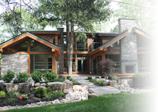
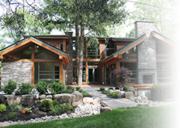

53 Hemford Cresent
Offered at $2,988,880
Key Environmental Design Aspects
ORIENTATION
Major windows of house face East / South-East to capture early day sunlight when house is coolest. West / South-West windows have major tree cover to avoid overheating in summer afternoons.
House is positioned to: preserve trees, afford light and view, avoid shadowing of neighbours natural light.
Balconies provide a relationship to the street, and an outdoor environment. They also provide privacy while maximizing light of the floor-to-ceiling windows. Roof gardening is encouraged.
Direct access to Leaside Spur Line Park
House is within 800m to over 25 shops and services, 900m to over 50 shops
ENTRY
Materials are highly durable for long life: granite entry porch; limestone walls in higher traffic areas; 3" thick driveway pavers; solid mahogany entry door; porcelain entry and kitchen floors; all flashing, membranes and waterproofing are done to the highest standards
LED lighting for main task areas
All Forestry Stewardship Council (FSC) rated wood used throughout for structure and finishes.
Permanent seating bench to help ensure that shoes are removed easily to avoid dirt and pollutants from entering the house that cause air filtration problems and higher maintenance.
ANTEROOM
home control station controls lighting, temperature, security and home music system.
provides a central phone, computer and internet hub for remote global controlling.
Visual access to all areas of house's interior and exterior. Immediate physical access to courtyard.
KITCHEN
Built in breakfast nook for comfort and maximum use of space
Five levels of lighting
Island gas cooking with custom lighting MEILE vent hood
Top end MEILE appliances including built in cappuccino/coffee/latte maker.
Easy access compost waste bin at cutting board
Two double recycling bin cabinets and a wine cooler
COURTYARD
Centralizing view from all domestic spaces encouraging environmental awareness while providing meditative enclosure and microclimate
Maintains vegetation and usable outdoor space
Local roof water drains to preserve 2Spruce tree root mass
Trees lower air conditioning capital and operating costs
STAIRWAY
acts as a light-well to main hall
acts as a vent shaft for house with an automated window at top level
custom LED step lights for night safety
solid maple and tempered glass construction.
LANDSCAPING
landscape is designed for maximum site water retention
terrace patios and driveway drain toward plant materials, infiltration and ponding areas
downspouts drain to French catchment drains and covered tree root mass area
drought resistant plant materials were utilized
fully automated irrigation and lighting system
permeable and semi permeable hardscapes with drainage to infiltration areas
trees preserved for major window shading to prevent heat gain in summer
DINING, LIVING AND FAMILY ROOMS
durable wood surfaces act as carbon sinks
5 sliding doors open to create a major indoor outdoor entertainment room
two sided gas fireplace provides extra views and social space
cathedral ceilings promote effective ventilation and slope to allow light into courtyard
custom floor mounted power outlets
BASEMENT
the polished concrete floors are for easy maintenance and efficient hydronic floor heating. Home cooling is also transmitted through the floors.
an innovative skylight is protected from weather and elements.
2 additional bedrooms or offices served by oversized pocket doors via main recreation room
All-in-One NTI Matrix high efficiency HVAC system with combined domestic hot water and hydronic heating supply. Complete with 4 TON A/C unit air handler
Power Pipe hot water recovery system
POWDER ROOM
Becomes a full 4 piece bathroom for guests or for 5th bedroom studio
Integrated for courtyard views and access to gardening clean-up
Secluded spa like area
UPPER FLOOR BEDROOMS
Combination bedroom at stair landing level provides flexibility in use for 2 single rooms or one double use function.
Laundry and balcony access in 2nd floor hallway
Double height walk-in closet for master bedroom for efficient storage
Heated bathroom floors
EXTERIOR PATIOS
Extensive patio provisions have been made for outdoor living room and dining room functions
Direct access to Leaside Spur Line Park
GARAGE
2 car parking with one Electric Car charging station.
Direct access to house from garage and separate access door to side walkway to back garden.
MATERIALS
Low VOC off-gassing materials and paints
LEED rated concrete
FSC rated wood
Radon tested clean environment
High Durability finishes
Zone C, Low E and Argon gas filled thermo pane windows
Roof R factor=R50; Walls= R22
LEED
The LEED Canada for Homes Rating System measures the overall performance of a home in eight categories:
1. Innovation & Design Process (ID). Special design methods, unique regional credits, measures not currently addressed in the Rating System, and exemplary performance levels.
2. Location & Linkages (LL). The placement of homes in socially and environmentally responsible ways in relation to the larger community.
3. Sustainable Sites (SS). The use of the entire property so as to minimize the project's impact on the site.
4. Water Efficiency (WE). Water-efficient practices, both indoor and outdoor.
5. Energy & Atmosphere (EA). Energy efficiency, particularly in the building envelope and heating and cooling design.
6. Materials & Resources (MR). Efficient utilization of materials, selection of environmentally preferable materials, and minimization of waste during construction.
7. Indoor Environmental Quality (EQ). Improvement of indoor air quality by reducing the creation of and exposure to pollutants.
8. Awareness & Education (AE).The education of the homeowner, tenant, and/or building manager about the operation and maintenance of the green features of a LEEDS home. The LEEDS Canada for Homes Rating System works by requiring a minimum level of performance through prerequisites, and rewarding improved performance in each of the above categories. The level of performance is indicated by four performance tiers - Certified, Silver, Gold and Platinum - according to the number of points earned.
Features:
Master bedroom : wooden beams, oversize wood framed sliding glass door to private balcony, walk-in closet, 5 piece ensuite boasts whirlpool tub, separate shower and double sinks.
Junior master : oversize wood framed sliding glass door to private balcony.
2nd floor bath : 5 piece bath boasts whirlpool tub, separate shower and double sinks.
Kitchen : Colour co-ordinated built-in Miele appliances. Appliance tower has a coffee/espresso maker, warming drawer, electric speed oven (combination microwave & convection oven), Ceasarstone island contains gas cook top and gas oven. Elsewhere 2 sinks (1 prep), built-in dishwasher, built-in refrigerator w/icemaker, standalone stainless steel fume hood, under counter Marvel wine cooler. Built-in custom banquette breakfast nook and I-pad powered full home control centre. Slate coloured porcelain floors and indirectly lit valences.
Living /Dining : Cathedral ceiling, extensive wood details, 2 wood framed sliding glass doors to 2 separate decks
Remote control see-thru gas fireplace, indirectly lit valences, built in sideboard.
Flexible Family Wing : Cathedral ceiling, extensive wood details, 2 wood framed sliding glass doors to central courtyard deck, 4 piece ensuite bathroom with 2 separated areas, one with sink / shower & one with water closet and sink - allows the wing to be used as a music room, nanny/granny suite, 5th bedroom, home theatre etc.
Study/Library/office : Cathedral ceiling, extensive wood details, easy access to front door for home office.
Lower floor rec room : Heated floors, innovative skylight with access to 3 piece bathroom.
Lower floor den : could be extra bedroom, heated floors with access to 3 piece bathroom.
Lower floor Games room : could be extra bedroom, heated floors with access to 3 piece bathroom.
Control Centre : controls heating/cooling HVAC, security system and cameras, some lighting & music system.
To reach Darrin Tooth, Sales Representative, please call (416) 569-8627 or email dtooth@trebnet.com.


 
